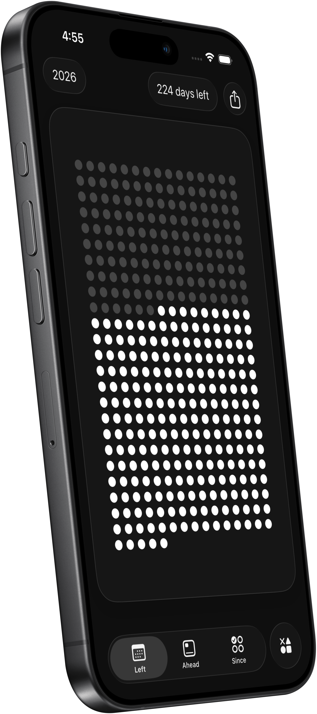

Year Progress Widget
See how far through the year, month, week, or day you are. The year progress widget makes time tangible with beautiful, glanceable layouts on your Home Screen.
Ready for iOS 26
Habit, Countdown & Life Widgets

Track your habits, countdowns, and time left — right from your Home Screen. Left is a habit tracker, countdown widget, year progress, days since counter, and life-in-weeks app for iPhone. Beautiful widgets for everything that matters.
See how far through the year, month, week, or day you are. The year progress widget makes time tangible with beautiful, glanceable layouts on your Home Screen.

Choose from dots, stars, hearts, hexagons and more. Every countdown widget is fully customizable — change the background or use a glass effect to match your wallpaper.

Birthday countdown, vacations, holidays, weddings, and more. Set up to ten different special dates and visualise the time left with multiple countdown widget options at a glance.

Track your habits with daily, weekly, and custom schedules. Habit tracker widgets on your Home Screen, Lock Screen, and StandBy — also on iPad and Mac.

Track how many days have passed since any date. The days since counter includes automatic streak tracking and a minimal, beautiful Home Screen widget.

Visualise your lifetime in weeks, months, or years. A calm, stoic-inspired life in weeks view that makes time visible — calculate your life expectancy and see your time left.
Left is a habit tracker, countdown timer, and time awareness app — all in one. Widget-first with a one-time purchase, no subscriptions. With over 3000 widget combinations and full customization, it's the most elegant way to track your habits, countdowns, and life.
Left is fully compatible with iOS 26. Keep your countdowns, time left, and year progress front and center with interactive widgets on the Home Screen, Lock Screen, and StandBy.
Prefer a translucent look? Left includes the option for all the widgets to be with a glass effect that subtly blur and tint to match your wallpaper, creating a calm, premium feel that fits perfectly with iOS 26.
See how far through the year you are with a clean year progress widget — great for planning, reporting, or simply staying mindful.
Glanceable time left widgets for the current day, week, or month help you pace work and avoid last-minute rushes.
Trips, weddings, product launches, exams, or personal goals — countdown widgets and birthday countdowns keep motivation high.
Visualise your lifetime in weeks, months, or years to focus on what matters. A calm, stoic life in weeks view that many users check daily.
Track daily habits with a habit tracker widget on your Home Screen. Use the days since counter to see how long you've kept a streak going.
Automatic streak tracking for habits — complete daily, weekly, or on custom schedules. See your streaks grow right on your Home Screen.
100% worth it! Bonus for probably the fairest pricing model out there! It's rare nowadays to find a great app that only requires one time payment.
– Mark S.
I was looking for an app like this for a long time. The design is fabulous. The UI is terrific honestly, it's beautiful as hell.
– Anna C.
To be aware of the time that is left is such a gift, and this app does that so, so well! This app lets you be grateful for the time we have.
– Joe K.
I don't have to pay for a stupid subscription. One time payment for premium and that's it!
– Avery M
Minimal, fast, and thoughtfully designed. I love that I can keep it simple but still customize when I want.
– Aella F.
The life-in-weeks view is brilliant. It's motivating without being noisy, and the styles are tasteful. Exactly what I wanted.
– Ollie B.
Left is free for most features and widgets. Only special dates and a custom lifespan require Left+. Unlock everything with a one-time, pay-what-you-want purchase.
Left is ready for iOS 26 and works on all compatible iPhones. You can also add widgets on iPad and Mac.
Life expectancy is estimated using Apple Intelligence and multiple factors such as age, gender, activity, sleep, country of birth, and more.
Yes. Left includes a habit tracker with daily, weekly, and custom schedules. Track habits with streak widgets on your Home Screen and see your progress at a glance.
Yes. Widgets work offline and data stays on your device. See our Support page for details.